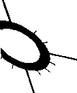

Chronologie des supports, des dispositifs spatiaux, des outils de repérage de l'information
Sylvie FAYET-SCRIBE
Maître de conférences, Université Paris 1
Septembre 1997
|  |
Résumé
Cet article consiste à présenter un tableau chronologique
(compris entre la préhistoire et le XXe siècle), et son
commentaire qui donnent à voir l'histoire des "techniques
intellectuelles" permettant le repérage de l'information. C'est-à-dire les méthodes et les outils ayant la capacité de
repérer et de retrouver l'information: indexation, classification,
activité résumante, encyclopédies, dictionnaires et outils
de recensement: répertoires, annuaires, chronologies; ainsi que les
moyens de retrouver les références du document (et non
l'information elle-même) : bibliographies et catalogues.
Abstract
This article present a chronology from prehistory to the XXe century
and a comment on the history of the "intellectual techniques" of
information retrieval including methods and tools. The explored methods
are: indexation, classification and abstracting. The main tools are:
checking-tools like lists, repertories, yearly directories and also
indexes, encyclopedias and dictionaries. Furthermore the tools applied
to retrieve documents like bibliographies and catalogues are examined. |
[Introduction] - [Tableau] - [Commentaires] - [Bibliographie]
Ce travail se situe d'emblée à deux niveaux : sur l'unité, le livre (par exemple l'index d'un livre) et sur des ensembles : indexation de plusieurs unités (par exemple, le fonds documentaire, la bibliothèque, le réseau électronique). C'est pourquoi le repérage ne peut pas être qu'un moment de l'acte de lecture : il va en amont et en aval de l'acte de lecture. De même les outils de repérage sont la fois à usage personnel et à usage collectif.
L'accès à l'information écrite est dans cet article privilégié, l'image fixe puis animée n'est pas prise en compte. De même, les supports de l'écrit retenus sont ceux les plus usités au cours du temps : papyrus, papier, etc...et non les corps, le tissu, etc... qui n'apparaissent pas, ainsi que d'autres supports d'informations éphémères : sable mouillé, craie et tableau noir, etc...
Suivre les "techniques intellectuelles" sur un temps long donne une vision "internaliste" du temps propre au type d'outils étudiés, notamment dans leur développement et leurs apparitions successives; il demande à être complété par une série de "micro-histoires", où chaque outil nouveau est précisément resitué dans son contexte culturel, économique, politique et social. En cela, une présentation plus "externaliste" du temps est proposée: elle nécessiterait que chaque historien spécialisé dans une période donnée puisse amener des éclaircissements sur l'homme et l'outil. Nous proposons que ce travail prenne ensuite la forme d'une exposition, on peut consulter le projet de cette exposition (Fayet-Scribe et Leroy, 1996). A titre indicatif, cet article présente à la fin de l'introduction, une liste d'individus qui ont inventé ou exploré un moyen d'accès sur un outil particulier dans chaque grande période historique.
Cet article s'inscrit dans un travail de recherche plus large consacré à l'histoire des techniques intellectuelles de repérage de l'information et à leur professionnalisation dans la première moitié du XXe siècle (1895-1937) : en effet, cette chronologie sur une longue durée et son commentaire sont un préalable indispensable qui permet d'étudier comment les techniques intellectuelles de repérage de l'information ont été explorées, utilisées, innovées et revendiquées dans la formation de documentaliste durant la période 1895-1937 au sein de leurs associations telles que le Bureau Bibliographique de France (BBF), la Fédération Internationale de la Documentation (FID), l'Association de Développement de la Lecture Publique (ADLP), l'Union Française des Organismes de Documentation (UFOD).
Ajoutons d'emblée que ce ne sont pas seulement des outils mais aussi des méthodes et des concepts qui ont été revendiqués lors de la naissance des formations. Ces associations seront examinées à partir de leurs sources primaires (archives) qui permettront la constitution de monographies et la prosopographie des acteurs. Un travail préliminaire a été effectué pour présenter le champ des associations de documentalistes durant la première moitié du XXe siècle (Fayet-Scribe, 1997). Ces associations évoluent autant dans le monde du savoir scientifique que dans le monde du savoir industriel et technique. Plus globalement, ces recherches s'insèrent dans mes travaux antérieurs sur l'histoire des associations et de la professionnalisation (Fayet-Scribe, 1990).
Définitions adoptées dans ce travail : la conception de l'information spécialisée, telle qu'elle est définie actuellement, délimite fortement le domaine investi par cette notion : "L'information spécialisée est une information destinée aux spécialistes (industriels, chercheurs, enseignants) qui leur est nécessaire dans leur activité professionnelle et qui conditionne une prise de décision ou une action particulière. Il faut la différencier de l'information pour le grand public notamment par la nature des informations transmises ainsi que le canal de communication emprunté." (Chartron, 1992, p.351).
Historiquement, la définition est plus large car l'information, plus globalement est liée à la connaissance, et à des formes de connaissance diverses : théologique, mythique, philosophique, technique, scientifique... que vont s'approprier divers individus qui n'ont pas encore de statut professionnel dans la société, tout en étant liées à des lieux privilégiés de la connaissance : bibliothèques, monastères, corporations, universités, laboratoires, académies, entreprises... Peu à peu se formera "une information scientifique et technique" (IST), de portée internationale, indépendante d'une culture particulière et validée par l'ensemble d'une communauté. A ce titre, les prémices de l'IST sont sans doute à voir au XVIIe siècle, moment où naissent tout à la fois les périodiques scientifiques, les laboratoires et des individus qui ont pour objectif l'étude scientifique et/ou technique; de plus, la communauté internationale scientifique a une activité sans frontière.
Quant au mot information, au sens étymologique du mot "in-former" signifie "donner une forme", or la matière première à mettre en forme est bien la connaissance. Connaître signifie à la fois savoir et comprendre, c'est-à-dire être capable d'expliquer le rapport de l'objet de connaissance avec les autres choses déjà sues.
Cette mise en forme de la connaissance se fera d'abord par le langage, puis par l'écriture, et celle-ci s'inscrira dans le document. Le document écrit imprimé (mais aussi le document électronique, photographique, vidéographique... ou autre) peut être défini selon l'indication de l'Organisation Internationale de Normalisation (ISO-TC 46) comme un :"Ensemble formé par un support et une information, généralement enregistrée de façon permanente et tel qu'il puisse être lu par l'homme ou la machine"; Ce que traduit bien la définition proposée par J. Meyriat et R. Estival : "Toute connaissance mémorisée, stockée sur un support, fixée par l'écriture ou inscrite par un moyen mécanique, physique, chimique, électronique, constitue un document. Dans la chaîne primaire de création, tant que le document est créé mais n'est pas encore utilisé par un récepteur, il reste un document virtuel. Dès lors qu'il est employé et décodé par un récepteur, le document devient réel : il a trouvé son utilisateur" (Meyriat et Estival, 1981, p.84).
Utiliser un document, y puiser une information est un acte fondamental. Il y a des documents qui ont été produits pour être porteurs d'informations, c'est ceux que nous examinerons. Il existe des connaissances difficilement transmissibles par le langage écrit, mais nous ne traitons ici que de la connaissance explicitée. Nous avons pour objectif d'étudier les voies d'accès à l'information, via le document et son support, à travers des outils qui sont capables de fournir les références du document, voire les informations elle-mêmes.
Faire l'histoire du repérage de l'information sur un temps long permet de mener une réflexion sur l'information elle-même et sur son fonctionnement et non sur l'histoire des bibliothèques, du livre, de l'écrit, ou de la lecture... Il s'agit de mettre l'accent, de manière dynamique, sur un facteur trop souvent oublié car rarement "isolé": celui des techniques intellectuelles de repérage.
Rendre visible ces techniques intellectuelles est important dans la mesure où justement elles ne semblent pas avoir d'histoire, ou si peu.
Relèvent-elles alors de la mémoire et seraient-elles sans cesse réactivées par nos pratiques? Ou encore sont-elles un éternel présent? car incorporées à nos pratiques, nous n'aurions pas conscience de leur existence? Prendre en compte leur histoire serait alors prendre des distances, et les rendre pleinement visibles. Les prendre pour objet, ce serait bel et bien selon la définition philosophique, les voir " indépendamment de l'esprit du sujet".
Ne s'agit-il pas aussi de mettre en lumière un "patrimoine culturel immatériel"? Si les oeuvres, les lieux ayant une valeur esthétique ou d'identité nationale ou locale sont bien identifiés comme appartenant au patrimoine, il est plus difficile de considérer des techniques intellectuelles comme des traces culturelles durables de notre patrimoine appartenant à la culture de l'information écrite. Or, que leur utilité fonctionnelle soit disparue ou non, nous considérons qu'elles relèvent d'un bien dont nous avons hérité des générations passées. Elles relèvent de la culture de l'information que notre société actuelle a tout intérêt à bien identifier.
Différents travaux m'ont incitée à faire ce tableau. Je me réfère en particulier aux interrogations actuelles de philosophes comme Pierre Lévy (Lévy, 1990) ou Régis Debray (Debray, 1991) qui ont été extrêmement stimulantes pour moi. Dans une analyse de l'ouvrage de Pierre Lévy que j'ai effectuée dans la revue : Documentaliste, Science de l'Information (vol.28, nº1, janv.-févr.91), il me semblait que l'ouvrage passionnant de Pierre Lévy consacré aux "technologies de l'intelligence" ne prenait pas suffisamment en compte les opérations et les outils permettant de retrouver l'information. De même, la "médiologie" de Régis Debray ne leur donnait pas de visibilité.
La grande liberté des objets et des questionnements dans la discipline historique française en 1997 accordait un large crédit à l'étude de la culture écrite (Chartier, 1989 ; Estival, 1993 ; Martin, 1988 ; Roche, 1989) voire de la communication écrite, mais peu au repérage de l'information. Seule, la recherche anglo-saxonne dans le champ de l'«information science» et son pragmatisme dans le choix de ses interrogations et de ses objets historiques avaient consenties à prendre en compte l'histoire de phénomènes comme l'activité résumante (abstracting) et l'indexation (indexing) (Witty, 1973 ; Borko, 1975), les index (Rouse Mary and Richard, 1980, 1989), le catalogage (cataloguing) (Norris, 1939), la transformation étonnante actuelle et passée du document et de l'information (Buckland, 1992, 1997; Schamber, 1996), l'ordre alphabétique (Daly, 1967), la presse scientifique et ses modes d'organisation de l'information (Kronick, 1976 ; Meadow, 1979; Lambert, 1982), l'organisation des notes en bas de page (Grafton, 1998).
De plus, dans l'encyclopédie des bibliothèques et de la science de l'information parue depuis 1968 (Kent et Lancour, 1968), chaque article est re-situé d'un point de vue historique. Construire un tableau chronologique sur un temps long permettait ainsi de rassembler des sources françaises ou anglo-saxonnes éparses, et de confronter différentes périodes historiques sur un même objet, cela permettant d'éviter de croire que chaque période nouvelle inventait, alors qu'elle ne faisait que perfectionner ou redécouvrir.
Suivre une méthode et son outil, bref une "technique intellectuelle" à travers le temps, permet de saisir sa date d'apparition, son perfectionnement (ou saut de qualité), sa disparition momentanée ou définitive ou sa coexistence avec d'autres méthodes et/ou outils. Cela permet ainsi de mettre en perspective son fonctionnement (et sa fonction culturelle et sociale) sur un temps long et d'en cerner les caractéristiques.
De manière plus globale, cela peut favoriser l'étude de la relation complexe entre l'organisation du savoir (en particulier dans son développement) avec ses outils d'information (ce qui constitue une des interrogations du numéro de la collection : Solaris nº4 dans lequel cet article s'inscrit).
En comparant hier à aujourd'hui, la question se pose de savoir où se situe réellement l'invention puis l'innovation pour le repérage quand on change de support? Quels legs utilisons-nous? et comment le dépassons-nous?
Ce travail se veut dans un premier temps une étude historique synthétique sur des problèmes étroitement circonscrits (les méthodes et les outils de repérage), cela doit permettre de donner une vue d'ensemble, et de travailler sur le temps (ce qui reste le propre de l'historien par rapport à d'autres sciences sociales). Il faut avoir suffisamment de données pour faire des propositions théoriques, en l'état, celles-ci restent ouvertes, et ce travail ne se rattache à aucune explication d'ensemble, voire aucune pensée totalisante.
"L'histoire de la mémoire collective peut se diviser en cinq périodes:
- celle de la transmission orale
- celle de la transmission écrite avec tables ou index
- celle des fiches simples
- celle de la mécanographie
- celle de la sériation électronique".
En fait au cours de ce travail, je me suis progressivement détachée des cinq grandes périodes définies par Leroi-Gourhan, notamment des deux premières (transmission orale et transmission écrite avec table et index). En effet, pour cet auteur, la période de la transmission orale doit être comprise dans un sens très large, puisqu'elle engloberait les premières écritures, et se prolongerait jusqu'à l'apparition de l'imprimerie. Il s'agirait plutôt d'une longue période de transmission linéaire, représentée notamment par le volumen "Jusqu'à l'apparition de l'imprimerie, en Occident comme en Chine, la séparation se fait difficilement entre la transmission orale et la transmission écrite" (Leroi-Gourhan, t.2, 1988, p.63). La période de transmission écrite avec table et index ne commencerait, quant à elle, qu'avec l'apparition de l'imprimerie. Or, je fais commencer la transmission écrite avec listes et tableaux dès l'Antiquité. On peut aussi considérer que la préhistoire à travers la disposition topographique des fresques pariétales, suggère elle-aussi un certain type d'organisation spatiale et peut-être sémantique; de même la transmission orale présente, à travers les caractéristiques du mythe, un certain mode d'organisation de l'information (Lévy, 1990).
Le découpage opéré par Leroi-Gourhan, en étant trop large, ne permet pas de bien faire ressortir les premiers signes d'une organisation non-linéaire de l'information, tels que les premières listes, catalogues, ou les premiers dictionnaires. Néanmoins, notre choix présente aussi des inconvénients: la deuxième période de la mémoire collective, celle de la transmission écrite avec tables et index, pleinement ouverte par l'imprimerie ne se détache peut-être plus suffisamment de la première. De plus, elle est minorée. Il n'y a plus de coupure ou de rupture. Une vision non linéaire du temps historique est donc nécessaire pour aborder l'histoire des «techniques intellectuelles».
En effet, les repères chronologiques habituels bien souvent politiques ou militaires sont souvent insignifiants pour ce type d'histoire. De plus, chaque technique a son temps propre, sans forcément engendrement ou rupture. Seule une notion non-linéaire du temps peut rendre compte de l'évolution de la vie, Michel Serres propose dans sa préface d'Eléments d'histoire des sciences des modèles pour comprendre l'écoulement du temps (Serres, 1989): réseaux routiers, de neurones, d'autoroutes, de rues, de circuits imprimés... Cependant, la logique du texte nous impose le "fil habituel du temps", tout en restant vigilante sur les lieux d'émergence, les carrefours d'engendrement, les routes parallèles, et les bas-côtés des chemins.
Pour suivre l'histoire des outils de repérage de l'information, il faut devant l'éparpillement bibliographique et parfois sa relative pauvreté (cf. critique des sources), constituer un tableau chronologique récapitulatif (mais certainement pas exhaustif) des outils d'accès à l'information.
Le tableau s'inscrit dans une longue tradition méthodologique, il est une des premières techniques intellectuelles de disposition graphique et sémantique. Il est déjà présent à Sumer et accompagne l'homme de la Grèce au Moyen-Âge et bien après. Condorcet, dans son ouvrage Esquisse d'un tableau historique de l'esprit humain décrit les tables et les tableaux comme des "méthodes techniques" qu'il définit comme " l'art de réunir un grand nombre d'objets sous une disposition systématique, qui permette d'en voir d'un seul coup d'oeil les rapports, d'en saisir rapidement les combinaisons, d'en former plus facilement de nouvelles" (cité par Roger Chartier, dans Tous les savoirs du monde 1996, p.484).
Cinq colonnes ont été distinguées : temps/lieu, support, dispositif spatial, outils et repérage de l'information, remarques (pour comprendre, en particulier, le repérage, le stockage, la collecte, la diffusion ou l'usage de l'information). Le tableau ayant été constitué à partir de sources diverses, on se rapportera à la bibliographie générale de l'article, chaque donnée ne pouvant être référencée individuellement.
On remarquera que l'histoire de l'écrit a été volontairement privilégiée par rapport à l'oral et à l'image car jusqu'à présent l'homme s'est plus préoccupé de retrouver l'information écrite et parfois orale que l'information en image fixe ou animée qu'il avait du mal à stocker. Toutefois, nous n'avons pas totalement abandonné l' image et l'oralité, puisque nous avons décidé de ne pas exclure la préhistoire du tableau. Cette période était importante à re-situer dans la mesure où elle nous plonge dans un monde dominé par l'oralité et l'image, et comme l'a bien montré Leroi-Gourhan, le passage de la pensée mythologique à la pensée rationnelle, par l'écriture, est aussi la perte d'un pouvoir de symbolisation individuel. La conscience de cette perte permet peut-être ainsi de relativiser nos acquis, et de prendre conscience que la voie du symbole reste toujours inachevée.
La deuxième colonne s'intéresse au "support" marquant ainsi combien l'histoire matérielle de l'écrit est importante, mais indiquer le support de "l'argile à l'écran " accompagné de sa "mise en page" ne suffit pas. Il faut scruter les rapports entre le support, l'organisation spatiale et sémantique, et l'évolution du savoir en ce qui concerne ses caractéristiques de traitement de l'information.
De fait, les colonnes trois et quatre sont parfois difficiles à séparer. Le dispositif graphique est intimement lié à l'outil sémantique d'accès, dans la mesure où la disposition spatiale agit directement sur l'usager pour sa compréhension du contenu; on aimerait parfois dessiner des pointillés entre les deux.
La troisième colonne "dispositif spatial" comprend :
La quatrième colonne "outils et repérage de l'information" comprend :
On peut aussi y rajouter les dossiers documentaires qui comprennent l'information elle-même.
Volontairement ont été exclus:
L'histoire de ces méthodes et outils est tout à fait intéressante. Les raisons de leur exclusion résident dans le fait que ces outils ont été moins revendiqués dans la pratique des documentalistes à leur début (et semblent avoir été moins présents que les précédents lors de la naissance des métiers de documentaliste).
Enfin, il y a tous les outils que j'ai certainement oublié. Par, exemple, parmi bien d'autres qui viendront à l'esprit d'un lecteur attentif, les travaux de synthèse (nommés en anglais"trends report", "states of the arts") qui permettent de faire un bilan des acquis et sont extrêmement bien référencés (je remercie Monsieur Jean Hassenforder qui m'a signalé cet oubli), je compte sur la vigileance de mes futurs lecteurs pour me signaler tous mes autres oublis.
Le tableau est bien sûr suivi d'un commentaire récapitulatif.
[Introduction] - [Tableau] - [Commentaire] - [Bibliographie]
© "Solaris", nº 4, Décembre 1997.